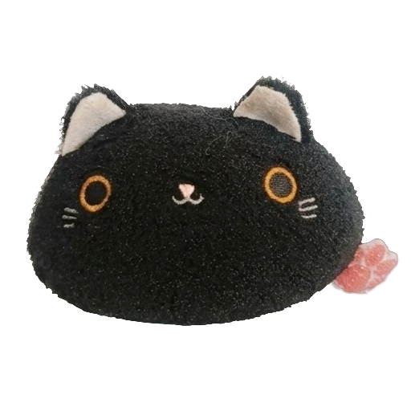

Информация
Имя: Плюх
Дата рождения: 01.01.2000
Любимое число: 67
Описание
Это популярная серия круглых мягких игрушек, по форме напоминающих традиционное японское лакомство данго. Данный персонаж — Kuro (черный кот) с характерной розовой лапкой-ярлыком сзади.